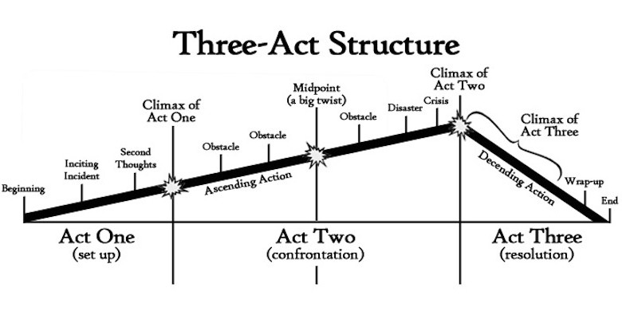

Сценарный консультант и преподаватель Джон Труби рассказал сайту кинофестиваля Raindance, чего следует опасаться, пытаясь уложить историю в рамки традиционной трехактной структуры.
Каждый год авторы пишут примерно 50 000 сценариев. Из них покупают и экранизируют всего несколько сотен. Почему так много сценаристов терпит неудачу?
Очевидно, что бизнес может поддержать весьма ограниченное количество работ, однако в большинстве случаев сценарий не продается из-за низкого качества.
Я обучал буквально тысячи авторов, и каждый из них был умным и целеустремленным. Те из них, кто не преуспел в сценарном деле, вовсе не были глупыми — им не хватало тренировки и профессиональной техники.
Большинство авторов, пытающихся продать свой сценарий, и вовсе никогда не училось сценарному делу. Написать хороший сценарий гораздо сложнее, чем провести операцию на мозге, но при этом многие думают, что могут создать хорошую историю, потому что смотрят много фильмов и хорошо учились в школе.
Когда они все же решают разобраться в вопросе глубже, большинство идет и покупает несколько пособий по сценарному мастерству. Чему же учат эти книги? Подавляющее большинство из них рассказывают о так называемой трехактной структуре. Эти авторы ставят крест на своей карьере.
Трехактная структура — это самый разрушительный миф из всех, когда-либо навязанных писателям. Я бы хотел, чтобы о нем забыли. Однако его распространение означает, что когда-то эта система работала. Позвольте мне объяснить почему.
Трехактная структура существует лишь по одной причине: один человек объявил о ее существовании. Он обнаружил, что в удачных сценариях на странице 27 и 87 происходит что-то важное. Он назвал это поворотными пунктами и сформулировал вокруг этого теорию трехактной структуры. Что самое невероятное, ему все поверили.

Сценаристы были в таком положении и отчаянии, что не заметили, что король, на самом деле, голый. Они начали вторить друг другу и вместе написали более 100 книг на эту тему.
Некоторые при этом утверждали, что три акта существуют во всех художественных произведениях (это не так), и настаивали, что первым, кто открыл этот факт, был Аристотель. Вот только Аристотель ничего не говорил про три акта. Он говорил, что у каждой истории есть начало, середина и конец.
Упоминание трехактной структуры в попытках объяснить успешность той или иной истории сродни утверждению, что большинство прибыльных сценариев имеет счастливый конец. Это действительно так, но большинство неудачных фильмов также завершаются хэппи-эндом, как и большинство сценариев, которые так и не удается продать.
Каждый может разделить на три части буквально все. Часто это является важным элементом в выполнении серьезной задачи. Я называю трехактную структуру «спасательным кругом драматургии». Она помогает новичкам начать. Проблема в том, что даже авторы, пытающиеся писать профессионально, продолжают пользоваться этим кругом.
Почему трехактная структура не может помочь вам создать хороший сценарий?
Во-первых, сама концепция «акта» пришла из театра, где мы должны поднимать и опускать занавес. Почему мы должны брать эту относительно неуклюжую технику и применять ее в гораздо более подвижном искусстве?
Во-вторых, разделить фильм на три части слишком просто. Стандартные термины, которые применяют для этого — акт, поворотный пункт, кульминация, развязка — настолько общие, что практически теряют смысл.
Это означает, что эти термины сложно применить к вашей конкретной истории и персонажам. К примеру, за вашим героем гонятся в темном переулке. Что это — поворотный пукт, кульминация, развязка или просто еще одна сцена? Кто знает. Концепции, которыми мы оперируем — это наши инструменты, а если инструментам не хватает точности, мы обречены на провал.
В-четвертых, трехактная структура оставляет за бортом персонажей. Обратите внимание, что ни один из терминов, связанных с ней, никак не соотносится с персонажами. Нигде не упоминается, как они связаны с сюжетом. Неудивительно, что сценарии, написанные таким образом, обычно имеют неинтересных персонажей.
В-пятых, трехактная структура практически гарантирует вам слабый сюжет. Она утверждает, что вам необходимы две или три поворотных пункта. Большая ошибка. Особенно в последние годы, когда Голливуд делает ставку на более концентрированные сюжеты.
Взять, к примеру, фильм 1990 года «Презумпция невиновности»: у него не два или три поворотных пункта, а 12. Представьте, как ваш сценарий с двумя поворотными пунктами будет смотреться на этом фоне.
Наконец, трехактная структура не работает, потому что она субъективна. Дайте сценарий десяти людям и попросите их назвать поворотные пункты. Вы получите десять разных ответов, и все они будут правильными. Акт заканчивается там, где вы скажете. Иногда сценаристы спрашивают: «Что мне сказать, когда меня спросят, где заканчиваются акты в сценарии?» Вы можете говорить что угодно. Никому до этого нет дела. Представители студий задают такие вопросы для того, чтобы показаться умнее.
Почему бы не делить сценарий на четыре, пять или шесть актов? Престон Стерджесс, гораздо более серьезный авторитет в драматургии, разделял свои сценарии на восемь актов или, как он сам их называл, секций.
Объяснять успешность или провал сценария на основе трехактной структуры — это все равно что объяснять обвал фондового рынка или землетрясение после того, как это уже произошло. Обычно эксперты никогда не могут с точностью определить событие до того, как оно случится. Почему? Потому что их инструменты несовершенны. Самое главное здесь — это то, какими инструментами мы пользуемся. Большинство хороших аналитиков уже давно вышли за рамки трехактной структуры и строят свою работу на других принципах.
Вот несколько советов, которым нужно следовать, чтобы начать писать профессионально
Профессиональные сценаристы — это не какие-нибудь таинственные жрецы. Они мастера своего дела, которое, несмотря на его сложность, можно изучить. Профессиональные сценаристы используют техники, которые в корне отличаются от тех, что применяют остальные. Эти техники относятся к двум главным категориям: структуре и жанру.
Структура на профессиональном уровне не включает в себя упрощенную трехактную систему. Профессиональный сценарий практически всегда включает себя путешествие героя, в процессе которого он чему-то учится. Это путешествие включает в себя несколько шагов и несколько ложных начал. Чтобы отобразить это путешествие, профессиональная кинодраматургия не пытается навязать фальшивые наборы поворотных пунктов. Вместо этого профессионалы всегда пытаются удостовериться, что сюжет двигают именно персонажи, ведь это всего лишь действия героев и их развитие.
Концепция путешествия героя Джозефа Кэмпбелла
Профессионалы учатся детально планировать путешествие персонажа. Почему большинство сценариев, написанных по трехактной структуре, провисают в середине? Потому что трехактная структура не дает вам плана на середину.
Профессиональный подход отличается в зависимости от истории, поскольку план для каждого героя уникален.
Трехактная структура существует независимо от жанра. Если вы хотите добиться успеха, вам нужно достигнуть мастерства в конкретном жанре. Каждый жанр имеет свои структурные элементы, которые надо знать, чтобы увлечь зрителя. Самое главное — пройтись по этим элементам как можно оригинальнее.
Например, вы можете сказать, что «Тутси» — это идеальный пример трехактной структуры. Но верит ли кто-то всерьез, что эта сложная и насыщенная комедия была создана при помощи универсальных структур из пособий по сценарному мастерству? Или же это результат работы профессиональных авторов, которые знали особенности комедии и провели своего персонажа к фундаментальным изменениям во взглядах?
Когда вы ответите на этот вопрос, вы окажетесь на пути к пониманию, насколько высоким должен быть ваш уровень, чтобы конкурировать с профессионалами.